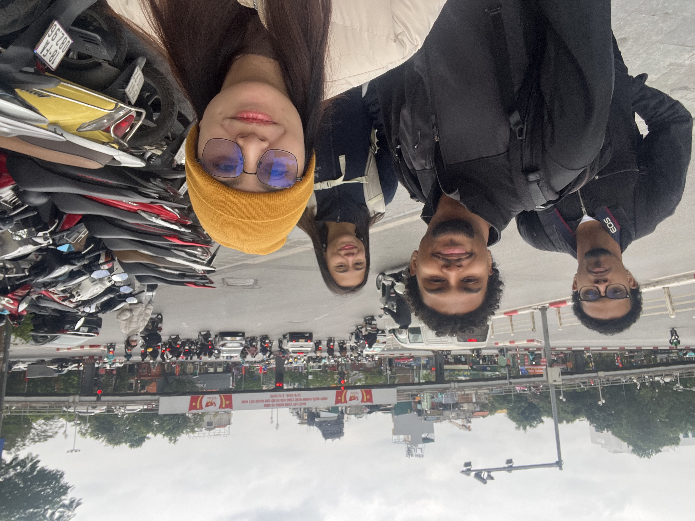
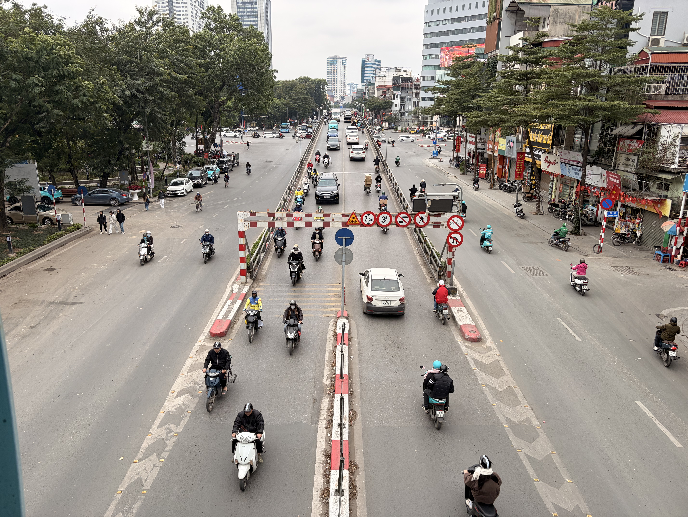

Digital Twin for Intersection Throughput and Air Pollution in Hanoi
Overview
At VinUniversity's College of Engineering and Computer Science, our team collaborated across disciplines and cultures to tackle a real-world challenge: traffic congestion and air quality at one of Hanoi's busiest intersections. We combined engineering analysis, computational tools, and on-the-ground observations to understand how transportation behavior and urban infrastructure shape daily conditions across the city.
We visited multiple districts to observe traffic patterns firsthand, then used those insights to propose an air quality improvement approach. Using the GAMA platform and digital twin simulations, we tested our ideas in a virtual environment to estimate impacts and evaluate effectiveness before real-world implementation.
The Team
On the Ground in Hanoi


Why This Intersection
We focused on the Chùa Bộc Street intersection,a high-density, mixed-traffic environment common in central Hanoi. This intersection represents the kind of chaotic, unstructured traffic flow that makes air quality improvement so challenging in Southeast Asian cities.
- Motorbikes dominate traffic and move flexibly across available space, not fixed lanes
- Mixed vehicle types compete for the same road space
- Buses face repeated interruptions, reducing schedule reliability
- Pedestrian crossings add stop-and-go waves, resulting in inconsistent flow
- Congestion is driven by interaction intensity, not signal timing alone
Scientific Questions
Our research centered on two key questions:
- How would dedicated bus lanes impact motorcycle usage and public transportation efficiency?
- Which vehicle types contribute most to air pollution, and how can this inform targeted policy interventions?
The Digital Twin Model
We built an agent-based simulation using the GAMA platform that models vehicles (cars, motorbikes, buses, pedestrians), road infrastructure (lanes, traffic lights, bus stops), and traffic police compliance. Each vehicle type has unique properties,speed, lane behavior, emission rates,and the model tracks a cumulative AQI metric to measure air quality changes relative to a baseline scenario where no lane separation exists.
GAMA Simulation
Agent-based traffic simulation running in the GAMA platform
Three Scenarios Tested
All scenarios compared against baseline model (AQI ~200) where no lane separation exists.
Key Findings & Policy Implications
Key Findings
- →Bus-only lanes increased congestion and worsened air quality,opposite of our hypothesis
- →The main pollution driver was stop-and-go traffic from mixed vehicle interactions
- →Traffic flow changes reduced emissions without relying on electrification or vehicle bans
Policy Implications
- →Separating lanes improves flow even when compliance is imperfect
- →Enforcement is needed to sustain benefits over time
- →Pilot by corridor first to improve air quality while maintaining access
Conclusion: Improving air quality at congested intersections is best achieved through a sequence of targeted, evidence-based interventions guided by digital twin simulation,rather than a single sweeping fix. Even imperfect compliance with lane separation produced meaningful AQI improvements compared to the status quo.